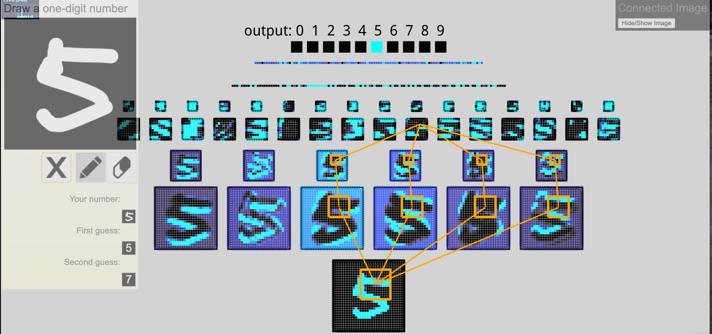

Marco's Interactive Node-Link Visualization of Convolutional Neural Networks [with all layers connected]
Demo
 |
This network has 1024 nodes on the bottom layer (corresponding to pixels), six 5x5 (stride 1) convolutional filters in the first hidden layer, followed by sixteen 5x5 (stride 1) convolutional filters in the second hidden layer, then three fully-connected layers, with 120 nodes in the first, 100 nodes in the second, and 10 nodes in the third. The convolutional layers are each followed by downsampling layer that does 2x2 max pooling (with stride 2). |
|  | This is my modification on the original website where I connected all layers in the visualization, added an image to illustrate the different layers, and made the output layer more intuitive. |
Citation
A. W. Harley, "An Interactive Node-Link Visualization of Convolutional Neural Networks," in ISVC, pages 867-877, 2015
Details
The networks were trained on an augmented version of MNIST, so they excel at categorizing centred upright numbers. The networks were trained in a custom neural network implementation in MATLAB; the math for the visualizations was written in Javascript; the visualization was created in WebGL. The source code for both visualizations is available here.